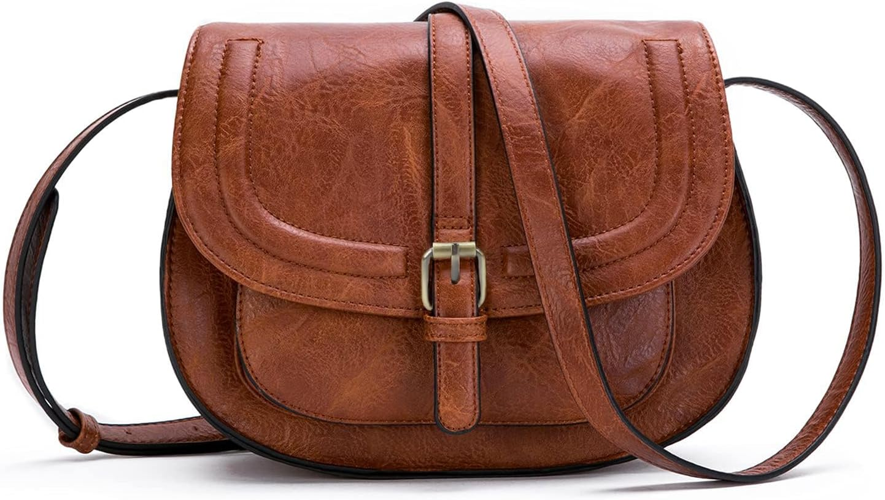

AFKOMST - Bolso bandolera para mujer: el bolso del día 207
Fin de semana: otras reglas, otros ritmos. El bolso de hoy es el AFKOMST - Bolso bandolera para mujer. No es un capricho de escaparate: es el que acompaña el bolso que no pide permiso, con 4,4★ de nota media y 12,162 valoraciones que respaldan la decisión.

Un bolso no cambia tu día. Cambia la manera de entrar en él: con lo que necesitas, sin lo que sobra y con la certeza de que otras 12,162 personas ya hicieron la misma elección antes que tú. Lo que más repiten sus compradoras: estética.
El repositorio de bolsos aún está creciendo hacia los 365: el día 207 comparte bolso con el día 17, pero cada paso por el calendario le da un enfoque nuevo. Cuando el repositorio se complete, cada día tendrá su propio bolso definitivo.